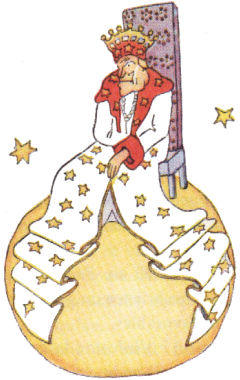
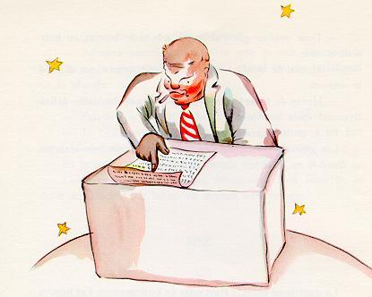

TO LEON WERTH
I ask the indulgence of the children who may read this book for dedicating it to a grown-up. I have a serious reason: he is the best friend I have in the world. I have another reason: this grown-up understands everything, even books about children. I have a third reason: he lives in France where he is hungry and cold. He needs cheering up. If all these reasons are not enough, I will dedicate the book to the child from whom this grown-up grew. All grown-ups were once children - although few of them remember it. And so I correct my dedication:
TO LEON WERTH WHEN HE WAS A LITTLE BOY
Once when I was six years old I saw a magnificent picture in a book, called True Stories from Nature , about the primeval forest. It was a picture of a boa constrictor in the act of swallowing an animal. Here is a copy of the drawing.

In the book it said: Boa constrictors swallow their prey whole, without chewing it. After that they are not able to move, and they sleep through the six months that they need for digestion
I pondered deeply, then, over the adventures of the jungle. And after some work with a colored pencil I succeeded in making my first drawing. My Drawing Number One. It looked something like this:

I showed my masterpiece to the grown-ups, and asked them whether the drawing frightened them.
But they answered: frighten? Why should any one be frightened by a hat?
My drawing was not a picture of a hat. It was a picture of a boa constrictor digesting an elephant. But since the
grown-ups were not able to understand it, I made another drawing: I drew the inside of a boa constrictor, so
that the grown-ups could see it clearly. They always need to have things explained. My Drawing Number Two looked
like this:
The grown-ups' response, this time, was to advise me to lay aside my drawings of boa constrictors, whether from the inside or the outside, and devote myself instead to geography, history, arithmetic, and grammar. That is why, at the age of six, I gave up what might have been a magnificent career as a painter. I had been disheartened by the failure of my Drawing Number One and my Drawing Number Two. Grown-ups never understand anything by themselves, and it is tiresome for children to be always and forever explaining things to them
So then I chose another profession, and learned to pilot airplanes. I have flown a little over all parts of the world; and it is true that geography has been very useful to me. At a glance I can distinguish China from Arizona. If one gets lost in the night, such knowledge is valuable.
In the course of this life I have had a great many encounters with a great many people who have been concerned with matters of consequence. I have lived a great deal among grown-ups. I have seen them intimately, close at hand. And that hasn't much improved my opinion of them.
Whenever I met one of them who seemed to me at all clear-sighted, I tried the experiment of showing him my Drawing Number One, which I have always kept. I would try to find out, so, if this was a person of true understanding. But, whoever it was, he, or she, would always say:
That is a hat
Then I would never talk to that person about boa constrictors, or primeval forests, or stars. I would bring myself down to his level. I would talk to him about bridge, and golf, and politics, and neckties. And the grown-up would be greatly pleased to have met such a sensible man.
So I lived my life alone, without anyone that I could really talk to, until I had an accident with my plane in the Desert of Sahara, six years ago. Something was broken in my engine. And as I had with me neither a mechanic nor any passengers, I set myself to attempt the difficult repairs all alone. It was a question of life or death for me: I had scarcely enough drinking water to last a week.
The first night, then, I went to sleep on the sand, a thousand miles from any human habitation. I was more isolated than a shipwrecked sailor on a raft in the middle of the ocean. Thus you can imagine my amazement, at sunrise, when I was awakened by an odd little voice. It said:
If you please--draw me a sheep!
What!
Draw me a sheep!
I jumped to my feet, completely thunderstruck. I blinked my eyes hard. I looked carefully all around me. And I saw a most extraordinary small person, who stood there examining me with great seriousness. Here you may see the best portrait that, later, I was able to make of him. But my drawing is certainly very much less charming than its model.

That, however, is not my fault. The grown-ups discouraged me in my painter's career when I was six years old, and I never learned to draw anything, except boas from the outside and boas from the inside
Now I stared at this sudden apparition with my eyes fairly starting out of my head in astonishment. Remember, I had crashed in the desert a thousand miles from any inhabited region. And yet my little man seemed neither to be straying uncertainly among the sands, nor to be fainting from fatigue or hunger or thirst or fear. Nothing about him gave any suggestion of a child lost in the middle of the desert, a thousand miles from any human habitation. When at last I was able to speak, I said to him:
But--what are you doing here?
And in answer he repeated, very slowly, as if he were speaking of a matter of great consequence:
If you please--draw me a sheep..
When a mystery is too overpowering, one dare not disobey. Absurd as it might seem to me, a thousand miles from any human habitation and in danger of death, I took out of my pocket a sheet of paper and my fountain-pen. But then I remembered how my studies had been concentrated on geography, history, arithmetic and grammar, and I told the little chap (a little crossly, too) that I did not know how to draw. He answered me:
That doesn't matter. Draw me a sheep..
But I had never drawn a sheep. So I drew for him one of the two pictures I had drawn so often. It was that of the boa constrictor from the outside. And I was astounded to hear the little fellow greet it with:
No, no, no! I do not want an elephant inside a boa constrictor. A boa constrictor is a very dangerous creature, and an elephant is very cumbersome. Where I live, everything is very small. What I need is a sheep. Draw me a sheep.
So then I made a drawing.

He looked at it carefully, then he said:
No. This sheep is already very sickly. Make me another.
So I made another drawing.

My friend smiled gently and indulgently.
You see yourself he said, that this is not a sheep. This is a ram. It has horns"
So then I did my drawing over once more
This one is too old. I want a sheep that will live a long time
By this time my patience was exhausted, because I was in a hurry to start taking my engine apart. So I tossed off this drawing.

And I threw out an explanation with it.
"This is only his box. The sheep you asked for is insideI was very surprised to see a light break over the face of my young judge
That is exactly the way I wanted it! Do you think that this sheep will have to have a great deal of grass?"
"Why?"
Because where I live everything is very small..."
"There will surely be enough grass for him," I said. "It is a very small sheep that I have given you."
He bent his head over the drawing.
"Not so small that--Look! He has gone to sleep..."
And that is how I made the acquaintance of the little prince.
It took me a long time to learn where he came from. The little prince, who asked me so many questions, never seemed to hear the ones I asked him. It was from words dropped by chance that, little by little, everything was revealed to me
The first time he saw my airplane, for instance (I shall not draw my airplane; that would be much too complicated for me), he asked me:

"What is that object?"
"That is not an object. It flies. It is an airplane. It is my airplane."
I was proud to have him learn that I could fly.
He cried out, then:
"What! You dropped down from the sky?"
"Yes," I answered, modestly.
"Oh! That is funny!"
And the little prince broke into a lovely peal of laughter, which irritated me very much. I like my misfortunes to be taken seriously.
Then he added:
"So you, too, come from the sky! Which is your planet?"
At that moment I caught a gleam of light in the impenetrable mystery of his presence; and I demanded, abruptly:
"Do you come from another planet?
But he did not reply. He tossed his head gently, without taking his eyes from my plane:
"It is true that on that you can't have come from very far away..."
And he sank into a reverie, which lasted a long time. Then, taking my sheep out of his pocket, he buried himself in the contemplation of his treasure
You can imagine how my curiosity was aroused by this half-confidence about the "other planets." I made a great effort, therefore, to find out more on this subject.
"My little man, where do you come from? What is this 'where I live,' of which you speak? Where do you want to take your sheep?"
After a reflective silence he answered:
"The thing that is so good about the box you have given me is that at night he can use it as his house."
"That is so. And if you are good I will give you a string, too, so that you can tie him during the day, and a post to tie him to.
But the little prince seemed shocked by this offer:

"Tie him! What a queer idea!"
"But if you don't tie him," I said, "he will wander off somewhere, and get lost."
My friend broke into another peal of laughter:
"Anywhere. Straight ahead of him."
Then the little prince said, earnestly:
"That doesn't matter. Where I live, everything is so small!"
And, with perhaps a hint of sadness, he added:
"Straight ahead of him, nobody can go very far..."
But that did not really surprise me much. I knew very well that in addition to the great planets--such as the Earth, Jupiter, Mars, Venus--to which we have given names, there are also hundreds of others, some of which are so small that one has a hard time seeing them through the telescope. When an astronomer discovers one of these he does not give it a name, but only a number. He might call it, for example,
"Asteroid 325".
This asteroid has only once been seen through the telescope. That was by a Turkish astronomer, in 1909

On making his discovery, the astronomer had presented it to the International Astronomical Congress, in a great demonstration. But he was in Turkish costume, and so nobody would believe what he said.
Grown-ups are like that...
Fortunately, however, for the reputation of Asteroid B-612, a Turkish dictator made a law that his subjects, under pain of death, should change to European costume. So in 1920 the astronomer gave his demonstration all over again, dressed with impressive style and elegance. And this time everybody accepted his report

If I have told you these details about the asteroid, and made a note of its number for you, it is on account of the grown-ups and their ways. When you tell them that you have made a new friend, they never ask you any questions about essential matters. They never say to you, "What does his voice sound like? What games does he love best? Does he collect butterflies?" Instead, they demand: "How old is he? How many brothers has he? How much does he weigh? How much money does his father make?" Only from these figures do they think they have learned anything about him.
If you were to say to the grown-ups: "I saw a beautiful house made of rosy brick, with geraniums in the windows and doves on the roof," would not be able to get any idea of that house at all. You would have to say to them: "I saw a house that cost $20,000." Then they would exclaim: "Oh, what a pretty house that is!"
Just so, you might say to them: "The proof that the little prince existed is that he was charming, that he laughed, and that he was looking for a sheep. If anybody wants a sheep, that is a proof that he exists." And what good would it do to tell them that? They would shrug their shoulders, and treat you like a child. But if you said to them: "The planet he came from is Asteroid B-612," then they would be convinced, and leave you in peace from their questions.

They are like that. One must not hold it against them. Children should always show great forbearance toward grown-up people.
But certainly, for us who understand life, figures are a matter of indifference. I should have liked to begin this story in the fashion of the fairy-tales. I should have like to say: "Once upon a time there was a little prince who lived on a planet that was scarcely any bigger than himself, and who had need of a sheep..."
To those who understand life, that would have given a much greater air of truth to my story.
For I do not want any one to read my book carelessly. I have suffered too much grief in setting down these memories. Six years have already passed since my friend went away from me, with his sheep. If I try to describe him here, it is to make sure that I shall not forget him. To forget a friend is sad. Not every one has had a friend. And if I forget him, I may become like the grown-ups who are no longer interested in anything but figures...
It is for that purpose, again, that I have bought a box of paints and some pencils. It is hard to take up drawing again at my age, when I have never made any pictures except those of the boa constrictor from the outside and the boa constrictor from the inside, since I was six. I shall certainly try to make my portraits as true to life as possible. But I am not at all sure of success. One drawing goes along all right, and another has no resemblance to its subject. I make some errors, too, in the little prince's height: in one place he is too tall and in another too short. And I feel some doubts about the color of his costume. So I fumble along as best I can, now good, now bad, and I hope generally fair-to-middling.
In certain more important details I shall make mistakes, also. But that is something that will not be my fault. My friend never explained anything to me. He thought, perhaps, that I was like himself. But I, alas, do not know how to see sheep through the walls of boxes. Perhaps I am a little like the grown-ups. I have had to grow old.
As each day passed I would learn, in our talk, something about the little prince's planet, his departure from it, his journey. The information would come very slowly, as it might chance to fall from his thoughts. It was in this way that I heard, on the third day, about the catastrophe of the baobabs.
This time, once more, I had the sheep to thank for it. For the little prince asked me abruptly--as if seized by a grave doubt-- "It is true, isn't it, that sheep eat little bushes?"
"Yes, that is true."
"Ah! I am glad!"
I did not understand why it was so important that sheep should eat little bushes. But the little prince added:
"Then it follows that they also eat baobabs?"
I pointed out to the little prince that baobabs were not little bushes, but, on the contrary, trees as big as castles; and that even if he took a whole herd of elephants away with him, the herd would not eat up one single baobab.
The idea of the herd of elephants made the little prince laugh.
We would have to put them one on top of the other," he said.

But he made a wise comment:
"Before they grow so big, the baobabs start out by being little."
"That is strictly correct," I said. "But why do you want the sheep to eat the little baobabs?"
He answered me at once, "Oh, come, come!" as if he were speaking of something that was self-evident. And I was obliged to make a great mental effort to solve this problem, without any assistance
Indeed, as I learned, there were on the planet where the little prince lived--as on all planets--good plants and bad plants. In consequence, there were good seeds from good plants, and bad seeds from bad plants. But seeds are invisible. They sleep deep in the heart of the earth's darkness, until some one among them is seized with the desire to awaken. Then this little seed will stretch itself and begin--timidly at first--to push a charming little sprig inoffensively upward toward the sun. If it is only a sprout of radish or the sprig of a rose-bush, one would let it grow wherever it might wish. But when it is a bad plant, one must destroy it as soon as possible, the very first instant that one recognizes it.

Now there were some terrible seeds on the planet that was the home of the little prince; and these were the seeds of the baobab. The soil of that planet was infested with them. A baobab is something you will never, never be able to get rid of if you attend to it too late. It spreads over the entire planet. It bores clear through it with its roots. And if the planet is too small, and the baobabs are too many, they split it in pieces...
It is a question of discipline," the little prince said to me later on. "When you've finished your own toilet in the morning, then it is time to attend to the toilet of your planet, just so, with the greatest care. You must see to it that you pull up regularly all the baobabs, at the very first moment when they can be distinguished from the rosebushes which they resemble so closely in their earliest youth. It is very tedious work, the little prince added, "but very easy."
And one day he said to me: "You ought to make a beautiful drawing, so that the children where you live can see exactly how all this is. That would be very useful to them if they were to travel some day. Sometimes," he added, "there is no harm in putting off a piece of work until another day. But when it is a matter of baobabs, that always means a catastrophe. I knew a planet that was inhabited by a lazy man. He neglected three little bushes..."
So, as the little prince described it to me, I have made a drawing of that planet. I do not much like to take the tone of a moralist. But the danger of the baobabs is so little understood, and such considerable risks would be run by anyone who might get lost on an asteroid, that for once I am breaking through my reserve. "Children," I say plainly, "watch out for the baobabs!"
My friends, like myself, have been skirting this danger for a long time, without ever knowing it; and so it is for them that I have worked so hard over this drawing. The lesson which I pass on by this means is worth all the trouble it has cost me.

Perhaps you will ask me, "Why are there no other drawing in this book as magnificent and impressive as this drawing of the baobabs?"
The reply is simple. I have tried. But with the others I have not been successful. When I made the drawing of the baobabs I was carried beyond myself by the inspiring force of urgent necessity.
Oh, little prince! Bit by bit I came to understand the secrets of your sad little life... For a long time you had found your only entertainment in the quiet pleasure of looking at the sunset. I learned that new detail on the morning of the fourth day, when you said to me:
"I am very fond of sunsets. Come, let us go look at a sunset now."
"But we must wait," I said.
"Wait? For what?"
"For the sunset. We must wait until it is time."
At first you seemed to be very much surprised. And then you laughed to yourself. You said to me:
"I am always thinking that I am at home!"
Just so. Everybody knows that when it is noon in the United States the sun is setting over France.
If you could fly to France in one minute, you could go straight into the sunset, right from noon. Unfortunately, France is too far away for that. But on your tiny planet, my little prince, all you need do is move your chair a few steps. You can see the day end and the twilight falling whenever you like...
"One day," you said to me, "I saw the sunset forty-four times!"
And a little later you added:
"You know--one loves the sunset, when one is so sad..."
"Were you so sad, the?" I asked, "on the day of the forty-four sunsets?"
But the little prince made no reply.

On the fifth day--again, as always, it was thanks to the sheep--the secret of the little prince's life was revealed to me. Abruptly, without anything to lead up to it, and as if the question had been born of long and silent meditation on his problem, he demanded:
"A sheep--if it eats little bushes, does it eat flowers, too?"
"Even flowers that have thorns?"
"Then the thorns--what use are they?"
I did not know. At that moment I was very busy trying to unscrew a bolt that had got stuck in my engine. I was very much worried, for it was becoming clear to me that the breakdown of my plane was extremely serious. And I had so little drinking-water left that I had to fear for the worst.
"The thorns--what use are they?"
The little prince never let go of a question, once he had asked it. As for me, I was upset over that bolt. And I answered with the first thing that came into my head:
"The thorns are of no use at all. Flowers have thorns just for spite!"
"Oh!"
There was a moment of complete silence. Then the little prince flashed back at me, with a kind of resentfulness:
"I don't believe you! Flowers are weak creatures. They are naďve. They reassure themselves as best they can. They believe that their thorns are terrible weapons..."
I did not answer. At that instant I was saying to myself: "If this bolt still won't turn, I am going to knock it out with the hammer." Again the little prince disturbed my thoughts:
"And you actually believe that the flowers--"
"Oh, no!" I cried. "No, no, no! I don't believe anything. I answered you with the first thing that came into my head. Don't you see--I am very busy with matters of consequence!"
He stared at me, thunderstruck.
"Matters of consequence!"
He looked at me there, with my hammer in my hand, my fingers black with engine-grease, bending down over an object which seemed to him extremely ugly...
"You talk just like the grown-ups!"
That made me a little ashamed. But he went on, relentlessly:
"You mix everything up together... You confuse everything..."
He was really very angry. He tossed his golden curls in the breeze.
"I know a planet where there is a certain red-faced gentleman. He has never smelled a flower. He has never looked at a star. He has never loved any one. He has never done anything in his life but add up figures. And all day he says over and over, just like you: 'I am busy with matters of consequence!' And that makes him swell up with pride. But he is not a man--he is a mushroom!"
"A what?"
"A mushroom!"
The little prince was now white with rage.
The flowers have been growing thorns for millions of years. For millions of years the sheep have been eating them just the same. And is it not a matter of consequence to try to understand why the flowers go to so much trouble to grow thorns which are never of any use to them? Is the warfare between the sheep and the flowers not important? Is this not of more consequence than a fat red-faced gentleman's sums? And if I know--I, myself--one flower which is unique in the world, which grows nowhere but on my planet, but which one little sheep can destroy in a single bite some morning, without even noticing what he is doing--Oh! You think that is not important!"
His face turned from white to red as he continued:
"If some one loves a flower, of which just one single blossom grows in all the millions and millions of stars, it is enough to make him happy just to look at the stars. He can say to himself, 'Somewhere, my flower is there...' But if the sheep eats the flower, in one moment all his stars will be darkened... And you think that is not important!"
He could not say anything more. His words were choked by sobbing.
The night had fallen. I had let my tools drop from my hands. Of what moment now was my hammer, my bolt, or thirst, or death? On one star, one planet, my planet, the Earth, there was a little prince to be comforted. I took him in my arms, and rocked him. I said to him:
"The flower that you love is not in danger. I will draw you a muzzle for your sheep. I will draw you a railing to put around your flower. I will--"
I did not know what to say to him. I felt awkward and blundering. I did not know how I could reach him, where I could overtake him and go on hand in hand with him once more.
It is such a secret place, the land of tears.

I soon learned to know this flower better. On the little prince's planet the flowers had always been very simple. They had only one ring of petals; they took up no room at all; they were a trouble to nobody. One morning they would appear in the grass, and by night they would have faded peacefully away. But one day, from a seed blown from no one knew where, a new flower had come up; and the little prince had watched very closely over this small sprout which was not like any other small sprouts on his planet. It might, you see, have been a new kind of baobab.
The shrub soon stopped growing, and began to get ready to produce a flower. The little prince, who was present at the first appearance of a huge bud, felt at once that some sort of miraculous apparition must emerge from it. But the flower was not satisfied to complete the preparations for her beauty in the shelter of her green chamber. She chose her colors with the greatest care. She dressed herself slowly. She adjusted her petals one by one. She did not wish to go out into the world all rumpled, like the field poppies. It was only in the full radiance of her beauty that she wished to appear. Oh, yes! She was a coquettish creature! And her mysterious adornment lasted for days and days.
Then one morning, exactly at sunrise, she suddenly showed herself.

And, after working with all this painstaking precision, she yawned and said:
"Ah! I am scarcely awake. I beg that you will excuse me. My petals are still all disarranged..."
But the little prince could not restrain his admiration:
"Oh! How beautiful you are!"
"Am I not?" the flower responded, sweetly. "And I was born at the same moment as the sun..."
The little prince could guess easily enough that she was not any too modest--but how moving--and exciting--she was!
"I think it is time for breakfast," she added an instant later. "If you would have the kindness to think of my needs--"

And the little prince, completely abashed, went to look for a sprinkling-can of fresh water. So, he tended the flower.
So, too, she began very quickly to torment him with her vanity--which was, if the truth be known, a little difficult to deal with. One day, for instance, when she was speaking of her four thorns, she said to the little prince:
"Let the tigers come with their claws!"
There are no tigers on my planet," the little prince objected. "And, anyway, tigers do not eat weeds."
"I am not a weed," the flower replied, sweetly.
"Please excuse me..."
"I am not at all afraid of tigers," she went on, "but I have a horror of drafts. I suppose you wouldn't have a screen for me?"
A horror of drafts--that is bad luck, for a plant," remarked the little prince, and added to himself, "This flower is a very complex creature..."
"At night I want you to put me under a glass globe. It is very cold where you live. In the place I came from--"
But she interrupted herself at that point. She had come in the form of a seed. She could not have known anything of any other worlds. Embarassed over having let herself be caught on the verge of such a naďve untruth, she coughed two or three times, in order to put the little prince in the wrong.
"The screen?"
"I was just going to look for it when you spoke to me..."
Then she forced her cough a little more so that he should suffer from remorse just the same.
So the little prince, in spite of all the good will that was inseparable from his love, had soon come to doubt her. He had taken seriously words which were without importance, and it made him very unhappy.
"I ought not to have listened to her," he confided to me one day. "One never ought to listen to the flowers. One should simply look at them and breathe their fragrance. Mine perfumed all my planet. But I did not know how to take pleasure in all her grace. This tale of claws, which disturbed me so much, should only have filled my heart with tenderness and pity."

And he continued his confidences:
"The fact is that I did not know how to understand anything! I ought to have judged by deeds and not by words. She cast her fragrance and her radiance over me. I ought never to have run away from her... I ought to have guessed all the affection that lay behind her poor little strategems. Flowers are so inconsistent! But I was too young to know how to love her..."

I believe that for his escape he took advantage of the migration of a flock of wild birds. On the morning of his departure he put his planet in perfect order. He carefully cleaned out his active volcanoes. He possessed two active volcanoes; and they were very convenient for heating his breakfast in the morning. He also had one volcano that was extinct. But, as he said, "One never knows!" So he cleaned out the extinct volcano, too. If they are well cleaned out, volcanoes burn slowly and steadily, without any eruptions. Volcanic eruptions are like fires in a chimney.
On our earth we are obviously much too small to clean out our volcanoes. That is why they bring no end of trouble upon us.
The little prince also pulled up, with a certain sense of dejection, the last little shoots of the baobabs. He believed that he would never want to return. But on this last morning all these familiar tasks seemed very precious to him. And when he watered the flower for the last time, and prepared to place her under the shelter of her glass globe, he realized that he was very close to tears.
"Goodbye," he said to the flower.
But she made no answer.
"Goodbye,"he said again.
The flower coughed. But it was not because she had a cold.
"I have been silly," said to him, at last. "I ask your forgiveness. Try to be happy..."
He was surprised by this absence of reproaches. He stood there all bewildered, the glass globe held arrested in mid-air. He did not understand this quiet sweetness.
"Of course I love you," the flower said to him. "It is my fault that you have not known it all the while. That is of no importance. But you--you have been just as foolish as I. Try to be happy... Let the glass globe be. I don't want it any more."
"My cold is not so bad as all that... The cool night air will do me good. I am a flower."
"But the animals--"
"Well, I must endure the presence of two or three caterpillars if I wish to become acquainted with the butterflies. It seems that they are very beautiful. And if not the butterflies--and the caterpillars--who will call upon me? You will be far away... As for the large animals--I am not at all afraid of any of them. I have my claws."
And, naďvely, she showed her four thorns. Then she added:
"Don't linger like this. You have decided to go away. Now go!"
For she did not want him to see her crying. She was such a proud flower
He found himself in the neighborhood of the asteroids 325, 326, 327, 328, 329, and 330. He began, therefore, by visiting them, in order to add to his knowledge.
The first of them was inhabited by a king. Clad in royal purple and ermine, he was seated upon a throne which was at the same time both simple and majestic.
"Ah! Here is a subject," exclaimed the king, when he saw the little prince coming.
And the little prince asked himself:
."How could he recognize me when he had never seen me before?"
He did not know how the world is simplified for kings. To them, all men are subjects.
"Approach, so that I may see you better," said the king, who felt consumingly proud of being at last a king over somebody.
The little prince looked everywhere to find a place to sit down; but the entire planet was crammed and obstructed by the king's magnificent ermine robe. So he remained standing upright, and, since he was tired, he yawned
"It is contrary to etiquette to yawn in the presence of a king," the monarch said to him. "I forbid you to do so."
"I can't help it. I can't stop myself," replied the little prince, thoroughly embarrassed. "I have come on a long journey, and I have had no sleep..."
"Ah, then," the king said. "I order you to yawn. It is years since I have seen anyone yawning. Yawns, to me, are objects of curiosity. Come, now! Yawn again! It is an order."
"That frightens me... I cannot, any more..." murmured the little prince, now completely abashed
"Hum! Hum!" replied the king. "Then I--I order you sometimes to yawn and sometimes to--"
He sputtered a little, and seemed vexed.
For what the king fundamentally insisted upon was that his authority should be respected. He tolerated no disobedience. He was an absolute monarch. But, because he was a very good man, he made his orders reasonable.
"If I ordered a general," he would say, by way of example, "if I ordered a general to change himself into a sea bird, and if the general did not obey me, that would not be the fault of the general. It would be my fault.
"May I sit down?" came now a timid inquiry from the little prince.
"I order you to do so," the king answered him, and majestically gathered in a fold of his ermine mantle
But the little prince was wondering... The planet was tiny. Over what could this king really rule?
"Sire," he said to him, "I beg that you will excuse my asking you a question--"
"I order you to ask me a question," the king hastened to assure him.
"Sire--over what do you rule?"
"Over everything," said the king, with magnificent simplicity.
Over everything?"
The king made a gesture, which took in his planet, the other planets, and all the stars.
"Over all that?" asked the little prince.
"Over all that," the king answered. the king answered.
For his rule was not only absolute: it was also universal.
"And the stars obey you?"
Certainly they do," the king said. "They obey instantly. I do not permit insubordination."
Such power was a thing for the little prince to marvel at. If he had been master of such complete authority, he would have been able to watch the sunset, not forty-four times in one day, but seventy-two, or even a hundred, or even two hundred times, without ever having to move his chair. And because he felt a bit sad as he remembered his little planet which he had forsaken, he plucked up his courage to ask the king a favor:
"I should like to see a sunset... Do me that kindness... Order the sun to set..."
"If I ordered a general to fly from one flower to another like a butterfly, or to write a tragic drama, or to change himself into a sea bird, and if the general did not carry out the order that he had received, which one of us would be in the wrong?" the king demanded. "The general, or myself?"
"You," said the little prince firmly.
"Exactly. One must require from each one the duty which each one can perform," the king went on. "Accepted authority rests first of all on reason. If you ordered your people to go and throw themselves into the sea, they would rise up in revolution. I have the right to require obedience because my orders are reasonable."
"Then my sunset?" the little prince reminded him: for he never forgot a question once he had asked it.
"You shall have your sunset. I shall command it. But, according to my science of government, I shall wait until conditions are favorable."
"When will that be?" inquired the little prince.
"Hum! Hum!" replied the king; and before saying anything else he consulted a bulky almanac. "Hum! Hum! That will be about--about--that will be this evening about twenty minutes to eight. And you will see how well I am obeyed!"
The little prince yawned. He was regretting his lost sunset. And then, too, he was already beginning to be a little bored.
"I have nothing more to do here," he said to the king. "So I shall set out on my way again."
"Do not go," said the king, who was very proud of having a subject. "Do not go. I will make you a Minister!"
"Minister of what?"
"Minster of--of Justice!"
"But there is nobody here to judge!"
"We do not know that," the king said to him. "I have not yet made a complete tour of my kingdom. I am very old. There is no room here for a carriage. And it tires me to walk."
"Oh, but I have looked already!" said the little prince, turning around to give one more glance to the other side of the planet. On that side, as on this, there was nobody at all...
"Then you shall judge yourself," the king answered. "that is the most difficult thing of all. It is much more difficult to judge oneself than to judge others. If you succeed in judging yourself rightly, then you are indeed a man of true wisdom."
"Yes," said the little prince, "but I can judge myself anywhere. I do not need to live on this planet."
"Hum! Hum!" said the king. "I have good reason to believe that somewhere on my planet there is an old rat. I hear him at night. You can judge this old rat. From time to time you will condemn him to death. Thus his life will depend on your justice. But you will pardon him on each occasion; for he must be treated thriftily. He is the only one we have."
"I," replied the little prince, "do not like to condemn anyone to death. And now I think I will go on my way."
"No," said the king.
But the little prince, having now completed his preparations for departure, had no wish to grieve the old monarch.
"If Your Majesty wishes to be promptly obeyed," he said, "he should be able to give me a reasonable order. He should be able, for example, to order me to be gone by the end of one minute. It seems to me that conditions are favorable..."
As the king made no answer, the little prince hesitated a moment. Then, with a sigh, he took his leave.
"I make you my Ambassador," the king called out, hastily.
He had a magnificent air of authority.
"The grown-ups are very strange," the little prince said to himself, as he continued on his journey.
The second planet was inhabited by a conceited man.

"Ah! Ah! I am about to receive a visit from an admirer!" he exclaimed from afar, when he first saw the little prince coming.
For, to conceited men, all other men are admirers.
"Good morning," said the little prince. "That is a queer hat you are wearing."
"It is a hat for salutes," the conceited man replied. "It is to raise in salute when people acclaim me. Unfortunately, nobody at all ever passes this way."
"Yes?" said the little prince, who did not understand what the conceited man was talking about.
"Clap your hands, one against the other," the conceited man now directed him.
The little prince clapped his hands. The conceited man raised his hat in a modest salute
"This is more entertaining than the visit to the king," the little prince said to himself. And he began again to clap his hands, one against the other. The conceited man again raised his hat in salute.
After five minutes of this exercise the little prince grew tired of the game's monotony.
"And what should one do to make the hat come down?" he asked.
But the conceited man did not hear him. Conceited people never hear anything but praise.
"Do you really admire me very much?" he demanded of the little prince.
"What does that mean--'admire'?"
"To admire means that you regard me as the handsomest, the best-dressed, the richest, and the most intelligent man on this planet."
"But you are the only man on your planet!"
"Do me this kindness. Admire me just the same."
"I admire you," said the little prince, shrugging his shoulders slightly, "but what is there in that to interest you so much?"
And the little prince went away.
"The grown-ups are certainly very odd," he said to himself, as he continued on his journey.
The next planet was inhabited by a tippler. This was a very short visit, but it plunged the little prince into deep dejection.
"What are you doing there?" he said to the tippler, whom he found settled down in silence before a collection of empty bottles and also a collection of full bottles.

"I am drinking," replied the tippler, with a lugubrious air.
"Why are you drinking?" demanded the little prince.
"So that I may forget," replied the tippler.
"Forget what?" inquired the little prince, who already was sorry for him.
"Forget that I am ashamed," the tippler confessed, hanging his head.
"Ashamed of what?" insisted the little prince, who wanted to help him.
"Ashamed of drinking!" The tipler brought his speech to an end, and shut himself up in an impregnable silence.
And the little prince went away, puzzled.
"The grown-ups are certainly very, very odd," he said to himself, as he continued on his journey.
The fourth planet belonged to a businessman. This man was so much occupied that he did not even raise his head at the little prince's arrival.
"Good morning," the little prince said to him. "Your cigarette has gone out."
"Three and two make five. Five and seven make twelve. Twelve and three make fifteen. Good morning. FIfteen and seven make twenty-two. Twenty-two and six make twenty-eight. I haven't time to light it again. Twenty-six and five make thirty-one. Phew! Then that makes five-hundred-and-one million, six-hundred-twenty-two-thousand, seven-hundred-thirty-one."
"Five hundred million what?" asked the little prince.
"Eh? Are you still there? Five-hundred-and-one million--I can't stop... I have so much to do! I am concerned with matters of consequence. I don't amuse myself with balderdash. Two and five make seven..."
"Five-hundred-and-one million what?" repeated the little prince, who never in his life had let go of a question once he had asked it.
The businessman raised his head.
"During the fifty-four years that I have inhabited this planet, I have been disturbed only three times. The first time was twenty-two years ago, when some giddy goose fell from goodness knows where. He made the most frightful noise that resounded all over the place, and I made four mistakes in my addition. The second time, eleven years ago, I was disturbed by an attack of rheumatism. I don't get enough exercise. I have no time for loafing. The third time--well, this is it! I was saying, then, five-hundred-and-one millions--"
Millions of what?"
The businessman suddenly realized that there was no hope of being left in peace until he answered this question.
"Millions of those little objects," he said, "which one sometimes sees in the sky."
"Flies?"
"Oh no. Little glittering objects."
"Bees?"
"Oh, no. Little golden objects that set lazy men to idle dreaming. As for me, I am concerned with matters ofconsequence. There is no time for idle dreaming in my life."
"Ah! You mean the stars?"
"Yes, that's it. The stars."
"And what do you do with five-hundred millions of stars?"
"Five-hundred-and-one million, six-hundred-twenty-two thousand, seven-hundred-thirty-one. I am concerned with matters of consequence: I am accurate."
"And what do you do with these stars?"
"What do I do with them?"
"Yes."
"Nothing. I own them."
"You own the stars?"
"Yes."
"But I have already seen a king who--"
"Kings do not own, they reign over. It is a very different matter."
"And what good does it do you to own the stars?"
"It does me the good of making me rich."
"And what good does it do you to be rich?"
"It makes it possible for me to buy more stars, if any are discovered."
"This man," the little prince said to himself, "reasons a little like my poor tippler..."
Nevertheless, he still had some more questions.
"How is it possible for one to own the stars?"
"To whom do they belong?" the businessman retorted, peevishly
"I don't know. To nobody."
"Then they belong to me, because I was the first person to think of it."
"Is that all that is necessary?"
"Certainly. When you find a diamond that belongs to nobody, it is yours. When you discover an island that belongs to nobody, it is yours. When you get an idea before any one else, you take out a patent on it: it is yours. So with me: I own the stars, because nobody else before me ever thought of owning them."
"Yes, that is true," said the little prince. "And what do you do with them?"
"I administer them," replied the businessman. "I count them and recount them. It is difficult. But I am a man who is naturally interested in matters of consequence."
The little prince was still not satisfied.
"If I owned a silk scarf," he said, "I could put it around my neck and take it away with me. If I owned a flower, I could pluck that flower and take it away with me. But you cannot pluck the stars from heaven..."
"No. But I can put them in the bank."
"Whatever does that mean?"
"That means that I write the number of my stars on a little paper. And then I put this paper in a drawer and lock it with a key."
"And that is all?"
"That is enough,"said the businessman
"It is entertaining," thought the little prince. "It is rather poetic. But it is of no great consequence."
On matters of consequence, the little prince had ideas which were very different from those of the grown-ups.
"I myself own a flower," he continued his conversation with the businessman, "which I water every day. I own three volcanoes, which I clean out every week (for I also clean out the one that is extinct; one never knows). It is of some use to my volcanoes, and it is of some use to my flower, that I own them. But you are of no use to the stars..."
The businessman opened his mouth, but he found nothing to say in answer. And the little prince went away.
"The grown-ups are certainly altogether extraordinary," he said simply, talking to himself as he continued on his journey.
The fifth planet was very strange. It was the smallest of all. There was just enough room on it for a street lamp and a lamplighter. The little prince was not able to reach any explanation of the use of a street lamp and a lamplighter, somewhere in the heavens, on a planet which had no people, and not one house. But he said to himself, nevertheless:
"It may well be that this man is absurd. But he is not so absurd as the king, the conceited man, the businessman, and the tippler. For at least his work has some meaning. When he lights his street lamp, it is as if he brought one more star to life, or one flower. When he puts out his lamp, he sends the flower, or the star, to sleep. That is a beautiful occupation. And since it is beautiful, it is truly useful."
When he arrived on the planet he respectfully saluted the lamplighter.
"Good morning. Why have you just put out your lamp?"
"Those are the orders," replied the lamplighter. "Good morning."
"What are the orders?"
"The orders are that I put out my lamp. Good evening."
And he lighted his lamp again.
"But why have you just lighted it again?"
"Those are the orders," replied the lamplighter.
"I do not understand," said the little prince.
"There is nothing to understand," said the lamplighter. "Orders are orders. Good morning."
And he put out his lamp.
Then he mopped his forehead with a handkerchief decorated with red squares.
"I follow a terrible profession. In the old days it was reasonable. I put the lamp out in the morning, and in the evening I lighted it again. I had the rest of the day for relaxation and the rest of the night for sleep."
"And the orders have been changed since that time?"
"The orders have not been changed," said the lamplighter. "That is the tragedy! From year to year the planet has turned more rapidly and the orders have not been changed!"
"Then what?" asked the little prince.
"Then--the planet now makes a complete turn every minute, and I no longer have a single second for repose. Once every minute I have to light my lamp and put it out!"
"That is very funny! A day lasts only one minute, here where you live!"
"It is not funny at all!" said the lamplighter. "While we have been talking together a month has gone by."
"A month?"
"Yes, a month. Thirty minutes. Thirty days. Good evening."
And he lighted his lamp again.
As the little prince watched him, he felt that he loved this lamplighter who was so faithful to his orders. He remembered the sunsets which he himself had gone to seek, in other days, merely by pulling up his chair; and he wanted to help his friend.
"You know," he said, "I can tell you a way you can rest whenever you want to..."
"I always want to rest," said the lamplighter.
For it is possible for a man to be faithful and lazy at the same time.
The little prince went on with his explanation:
"Your planet is so small that three strides will take you all the way around it. To be always in the sunshine, you need only walk along rather slowly. When you want to rest, you will walk--and the day will last as long as you like."
"That doesn't do me much good,"
"Then you're unlucky," said the little prince.
"I am unlucky," said the lamplighter. "Good morning."

And he put out his lamp.
"That man," said the little prince to himself, as he continued farther on his journey, "that man would be scorned by all the others: by the king, by the conceited man, by the tippler, by the businessman. Nevertheless he is the only one of them all who does not seem to me ridiculous. Perhaps that is because he is thinking of something else besides himself."
He breathed a sigh of regret, and said to himself, again:
"That man is the only one of them all whom I could have made my friend. But his planet is indeed too small. There is no room on it for two people..."
What the little prince did not dare confess was that he was sorry most of all to leave this planet, because it was blest every day with 1440 sunsets!
The sixth planet was ten times larger than the last one. It was inhabited by an old gentleman who wrote voluminous books.
"Oh, look! Here is an explorer!" he exclaimed to himself when he saw the little prince coming.
The little prince sat down on the table and panted a little. He had already traveled so much and so far!
"Where do you come from?" the old gentleman said to him.
"What is that big book?" said the little prince. "What are you doing?"
"I am a geographer," said the old gentleman.
"What is a geographer?" asked the little prince.
"A geographer is a scholar who knows the location of all the seas, rivers, towns, mountains, and deserts."
"That is very interesting," said the little prince. "Here at last is a man who has a real profession!" And he cast a look around him at the planet of the geographer. It was the most magnificent and stately planet that he had ever seen.
"Your planet is very beautiful," he said. "Has it any oceans?"
"I couldn't tell you," said the geographer.
"Ah!" The little prince was disappointed. "Has it any mountains?"
"I couldn't tell you," said the geographer.
"And towns, and rivers, and deserts?"
"I couldn't tell you that, either."
"But you are a geographer!"
"Exactly," the geographer said. "But I am not an explorer. I haven't a single explorer on my planet. It is not the geographer who goes out to count the towns, the rivers, the mountains, the seas, the oceans, and the deserts. The geographer is much too important to go loafing about. He does not leave his desk. But he receives the explorers in his study. He asks them questions, and he notes down what they recall of their travels. And if the recollections of any one among them seem interesting to him, the geographer orders an inquiry into that explorer's moral character."
"Why is that?"
"Because an explorer who told lies would bring disaster on the books of the geographer. So would an explorer who drank too much."
"Why is that?" asked the little prince.
"Because intoxicated men see double. Then the geographer would note down two mountains in a place where there was only one."
"I know some one," said the little prince,"who would make a bad explorer."
"That is possible. Then, when the moral character of the explorer is shown to be good, an inquiry is ordered into his discovery."
"One goes to see it?"
"No. That would be too complicated. But one requires the explorer to furnish proofs. For example, if the discovery in question is that of a large mountain, one requires that large stones be brought back from it."
The geographer was suddenly stirred to excitement.
"But you--you come from far away! You are an explorer! You shall describe your planet to me!"
And, having opened his big register, the geographer sharpened his pencil. The recitals of explorers are put down first in pencil. One waits until the explorer has furnished proofs, before putting them down in ink.
"Well?" said the geographer expectantly.
"Oh, where I live," said the little prince, "it is not very interesting. It is all so small. I have three volcanoes. Two volcanoes are active and the other is extinct. But one never knows."
"One never knows," said the geographer.
"I have also a flower."
"We do not record flowers,"said the geographer.
"Why is that? The flower is the most beautiful thing on my planet!"
"We do not record them," said the geographer, "because they are ephemeral.
"What does that mean--'ephemeral'?"
"Geographies," said the geographer, "are the books which, of all books, are most concerned with matters of consequence. They never become old-fashioned. It is very rarely that a mountain changes its position. It is very rarely that an ocean empties itself of its waters. We write of eternal things."
"But extinct volcanoes may come to life again,"the little prince interrupted. "What does that mean-- 'ephemeral'?"
"Whether volcanoes are extinct or alive, it comes to the same thing for us,"said the geographer. "The thing that matters to us is the mountain. It does not change."
"But what does that mean--'ephemeral'?" repeated the little prince, who never in his life had let go of a question, once he had asked it.
"It means, 'which is in danger of speedy disappearance.'"
"Is my flower in danger of speedy disappearance?"
"Certainly it is."
"My flower is ephemeral," the little prince said to himself, "and she has only four thorns to defend herself against the world. And I have left her on my planet, all alone!"
That was his first moment of regret. But he took courage once more.
"What place would you advise me to visit now?" he asked.
"The planet Earth," replied the geographer."It has a good reputation."
And the little prince went away, thinking of his flower.